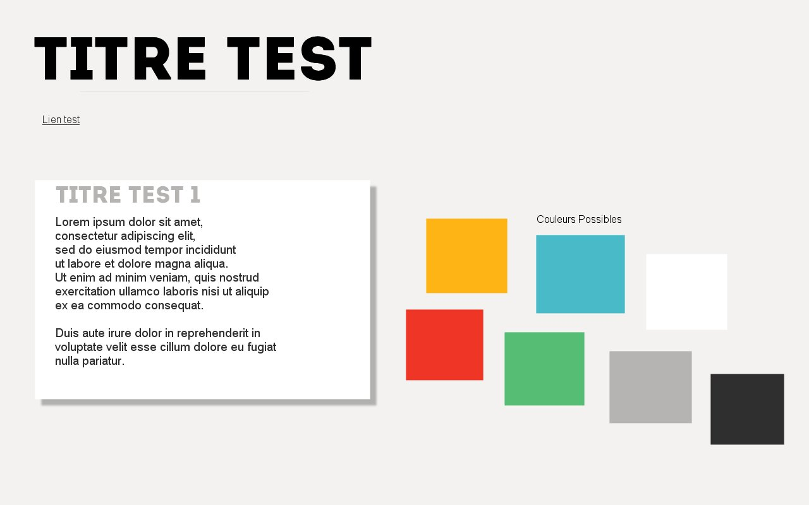

Fil rouge — DukooTV
Réseau social de séries télé
GroupTeam (Jean-François Escaich, Yann Faurie, Étienne Hounguevou, Antoine Piau).
Définition et recueil des besoins
Questionnaire
Personas
Bête à cornes
Moodboard
Style Tile

Wireframe
Mockup
Cas d'utilisation
État transition
Séquence
WBS
Chemin critique
Pert
Gantt
MCD
Stratégie de test
Stratégie de test
Stratégie de test
En ligne